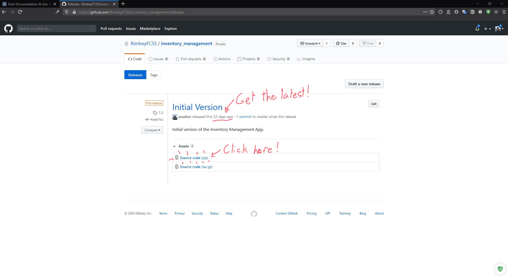

Introduction
The Inventory Management program is a 3-part service which allows the users to easily submit a count of their inventory, and then visualize historical trends via a graph.
This manual explains how to install the program onto your computer, how to interact with it, and how all the components work.
Additionally, there are resources available for reaching out to developers if something breaks and you wish to fix the program.
(Hint: Using the search feature in the top-left is highly recommended)
Related Terms and Software
E
- Edge (Microsoft Edge): A web browser, which looks like a blue lowercase "e".
- External developer: A developer which has been contracted to work on software, and is not a part-time or full-time employee of the organization.
G
- Github: A place to host software-related projects, such as the Inventory Management program. Github allows users to develop a program collaboratively, as well as offer an easy way to download their software. In short, Github is like Sharepoint for programmers :).
- Github Repository: This is the "home base" of a project, which includes things such as the code for the project, it's history of changes, and the released versions for people to download.
- Github Releases: This is the page that gives you access to download a released version of a project.
- Github Organization: An organization is a way to organize projects so that only certain users who are part of an organization may access that organization's projects.
- Google Chrome: A web browser, with an icon that looks like a green, yellow, and red sphere.
H
- Historical trends: A pattern in data that is dependant on time, if you visualize data over a period of time, you may begin to see this pattern.
I
- Inventory Management service: A service that consists of 3 components; a Microsoft Form for obtaining information, an Excel sheet for storing information, and a Visualizer for visualizing the information.
M
- Microsoft Form: A form that can be used as a "survey form" to obtain information from user's submissions.
- MiniConda: A suite of software that installs Python as well as some other useful programs so that the custom program can run.
P
- Python: A programming language named after "Monty Python", made popular due to its versatility and ease of use. Used in the custom program that visualizes the data.
R
- RUN.bat: A file in the Visualizer's folder that "starts" the program. It also checks to make sure that everything has been properly installed. Make sure to read it as the program starts as it gives useful information.
S
- Sharepoint: A service by Microsoft which allows multiple users to share documents and other information. You may sync these documents to your local computer by clicking "Sync" when you are in the documents section of Sharepoint.
- Sync: Many files nowadays are hosted "in the cloud", which is a fancy way of saying they are simply held on another computer, usually one designed especially for processing large amounts of information (ie. a server). Syncing allows you to "sync" any changes made to the file "in the cloud" to your computer and vice-versa, so that both are always up to date.
V
- Visualizer: 1 of 3 components of the Inventory Management service. This is the component that is installed locally on your computer from Github, and allows you to see a graph of your inventory.
W
- Web browser: A type of program whicb allows you to access websites via their address on the web. An example of an address is https://google.com.
Z
- Zip file: A file or folder which has been compressed for transfer. This is the most common way of sending data across the internet. Zip files can be "Extracted" by right-clicking the zip file, and then selecting "Extract".
Installation
Installation of Visualizater component
- The Visualizer can be installed by accessing the "Releases" page on the Github Respository where this program is kept.
-
Make sure that you are signed into Github using the account that is part of Rimbey FCSS's Github Organization.
-
Always choose the latest version unless otherwise specified. In "assets" choose "Source code (zip)", and a download should begin.

- Once your download is complete, you will need to extract the "zip" (compressed) file. Right-click on the file and choose "extract", then once it is done you should see a folder appear next to the zipped file. Move this folder somewhere safe and easy to find, such as your Desktop.

(A zip file typically looks like one of the above)

- Inside the folder, run the "RUN.bat" script, and you should see a prompt appear. If you do not have MiniConda installed, you will be prompted to download and install it. In this case (after installing it), continue to step 6, otherwise if you have Minoconda installed skip to step 7.


-
Download the Windows installer for Python 3.*, and install Conda for the local user. Once you are done installing MiniConda, close the prompt and try running RUN.bat again.
-
If MiniConda was installed successfully you should see progress bars begin to appear and fill up. This means the necessary packages are being installed. Once that is done, you should see a window appear in your web browser (your web browser likely being either Google Chrome or Microsoft Edge).

Syncing Sharepoint to your computer
It is recommended that you sync Sharepoint to your computer, so that the Excel sheet is available locally. This will allow you to easily access the Excel sheet from the Visualizer.
Quick Start
First, follow the instructions in the installation section, which you only need to do once per computer!.
-
Find the folder that you extracted in the installation process. It was recommended to put it somewhere where you will find it easily, and this is why!
-
double-Click on the "RUN.bat" file to launch the program. You should see some progress bars and then a window appear in your browser. Otherwise, refer to the installation section.
- You should see an empty graph like below (the current version may appear different, but the concepts are the same).
- Press the wide button near the top to load the Excel sheet that corresponds to the form submissions. You should see a graph appear like below.

- Make sure to play around with the controls in the top-right of the graph, one of which allows you to save the graph as an image!
Components of the Program
The program mainly consists of 3 parts; a Microsoft Form, an Excel sheet hosted on Sharepoint, and a Python script (the Visualizer) to be run locally on a computer.
The form and Excel sheet are linked together, and so any information submitted via the form will appear in the sheet. The sheet must be available locally on the computer for the Visualizer to read it, and so the recommended approach is to "sync" the RFCSS Sharepoint to your computer, which will make files on Sharepoint available on your computer.
Submitting - Microsoft Form
After counting the current inventory you have, you can submit it using the Microsoft Form associated with this program, which can be accessed here. Make sure you are signed into your RFCSS account to access it.
Every time you submit a new form, a row on data will appear in the sheet. Each row should correspond to a unique date, and so please avoid submitting multiple forms in one day. If multiple forms are submitted in a day, you will need to eliminate all but one in the sheet.
About modifying the Form
The form is connected to the Excel sheet, and so if you ever decide to modify the contents of the form, be sure to run tests and make sure that the sheet still functions normally.
Make sure that the inputted counts for all inventory are numbers (0, 1, 2...) that do not contain decimal points, alphabetic characters, or other invalid inputs. This will cause the program to stop working. Microsoft Forms can be configured to restrict inputs to only a certain type, so make sure to do so.
Storage - Microsoft Excel
The Inventory Management service use Sharepoint to host the Excel sheet and Form, which allows it to be accessed from anywhere and by anyone who has access to the Sharepoint. The sheet itself is comprised of Named Ranges, and rows that correspond to unique dates.

About modifying the sheet
If everything is functioning as intended, there shouldn't be a reason to access the sheet. However, if one wishes to modify the names of certain inventory items, or to delete submissions, you will likely need to access the sheet.
Deleting a submission
You can delete a submission by removing the corresponding row in the sheet. As long as only that row is deleted, everything should continue to work fine.
Visualization - Custom Program
The Visualizer is the special part of the Inventory Management service. It is the component that loads in the Excel sheet containing the form submissions, and then performs some computations to obtain a visual image of the submissions.
Starting the Visualizer
The Visualizer can be run by finding the folder which was downloaded in the installation process, and then launching the "RUN.bat" file. If any parts of the installation are missing, the prompt will notify you.
If the Visualizer is correctly installed, you should see a window open in your web browser that shows an empty graph. This means the Visualizer is ready but has no data loaded yet.
Loading data
The Visualizer purely serves as a high-tech "window" into your Excel sheet, and so it itself does not create, modify, or otherwise contain data. Thus, any interactions you have with the Visualizer will not affect the data it is visualizing.
Data can be loaded by clicking the button at the top of the window, and then selecting the Excel sheet that corresponds to the form.
The location or name of the Excel sheet will not affect the program. The following are the only requirements for the sheet to be correctly loaded:
- the sheet is available locally (or "offline") on your computer
- the sheet is structured where there is a column exactly named "Enter Date", which contains dates
- the other columns in the sheet contain numbers only.
Visualizing Data
Once the sheet has been correctly loaded, you can visualize the data by using the controls at the top-right of the graph. If you are unsure of what the controls do, simply hover your mouse over one of the controls and do not click. After a few moments a pop-up will appear with a short title or description of the control.
Example Usage Scenario
An example usage scenario is shown below:
Downloading the Visualizer
Submitting a Form
Visualizing the Form
For Maintenance
It has been noted in the Project Agreement that this program is likely not worth fixing, should it ever break. However, this section provides advice in case something breaks, so that one may fix it without needing to hire an external developer.
There are 2 main areas where this program may break:
- The interconnection between the components. The most likely area for problems.
- Deprecations in the Visualizer.
Connection between the components
Issues arising from the connection between the components could mean one of many things:
- The data being sent from the Form to the sheet is invalid, and / or the data being loaded from the sheet into the program may be invalid. This could be due to modifications of the form or sheet, which resulted in some incorrect values present in the sheet (such as an incorrectly-entered date or count of inventory).
- The Visualizer attempting to access an Excel sheet that has either been downloaded (and is thus not synced to Sharepoint and may be outdated) or is not properly synced to the computer (the file must be available offline / locally).
Anyone who is familiar with the Microsoft Office suite should be able to fix these problems without much difficulty, and so it should not be necessary to hire an external developer.
Deprecation within the custom program
Since any program must eventually interact with the computer that it runs on, updates made to that computer may eventually cause some features to stop working. This is unavoidable, and will eventually happen, whether it is a few months from now or a decade, and is entirely up to Microsoft.
Fixing this problem is typically not very hard, as large companies like Microsoft will make it easy for developers to update their software to work again.
Resources for finding developers
Sites
The following sites can be useful for finding developers to hire in case of necessary maintenance / improvements:
You can find an extensive list of recommendations here.
Required Qualifications
You will be looking for a developer who has experience with the programming language Python, as well as the Pandas and Plotly libraries for Python.
Knowing Python is a requirement, while Pandas and Plotly are strongly recommended (since if they aren't familiar with the libraries, it will take them longer to fix it, and possibly lead to more errors).